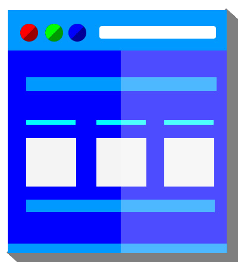

What is Lapys JS?
Lapys JS comprises of both CSS and Javascript as a front-end design and development framework with the aim of reducing building and coding time with conveniently organized and visually aesthetic apps or components.
Lapys JS focuses on the developer more than the project.
DOWNLOAD
Custom Download
Default Download
So Why Lapys JS?
Why it Works
Unlike other frameworks, Lapys JS is supported by a communities of developers who have a passion to make development time easier and more flexible.
With its fresh new components and use of little codes to make the large parts of everyday web pages, this framework inspires creativity and throws complexity out the window.
Finally, Lapys JS brings a simple development system into a digital web space of well-defined guidelines and parameters, intuitively conveying how interface should work in the most convenient and simple way.
Seamless, simple development.
The Framework for You
Whether it’s design, organization, simplicity or a just a head-start you’re looking for, Lapys JS is the framework you’ve been searching for.
